PARLEZ-VOUS
FRANÇAIS?
poduka iz francuskog jezika
O NAMA
Frankofon nudi nastavu francuskog jezika. Satove drži Rodolphe Sudon, izvorni govornik i diplomirani profesor s više od 10 godina iskustva. Njegova metoda osigurava aktivno učenje francuskog jezika u stvarnoj komunikacijskoj situaciji. Nastava je prilagođena individualnim potrebama: profesionalcima koji francuski uče u poslovne svrhe, učenicima koji pohađaju francuski u školi ili pak ljubiteljima francuskog jezika.
PODUKA
Želite naučiti francuski jezik? Neovisno jesu li Vaši razlozi privatni ili poslovni, dobit ćete u potpunosti prilagođen program Vašim specifičnim potrebama. Nudimo:
- online nastavu ili dolazak u Vaš prostor
- fleksibilne termine usklađene s Vašim mogućnostima
- individualnu nastavu ili nastavu u manjim grupama
- nastavu za početnike i napredne polaznike
- pripreme za DELF (diploma o poznavanju francuskog jezika koju strancima izdaje Ministarstvo obrazovanja Republike Francuske)
- praćenje školskog programa
- konverzacijske satove za napredne
PRIJEVOD
Trebate prijevod teksta s hrvatskog na francuski jezik? Nudimo stručne i kvalitetne prijevode u duhu francuskog jezika od strane izvornog govornika. Pismeni prijevodi obračunavaju se po kartici teksta (1500 znakova s razmacima).
KONTAKT
- 
- obrt za usluge
- vl. Rodolphe Sudon
- Zagreb, Vodovodna 9
- M: +385 95 881 9080
- E: rodolphe.sudon@gmail.com